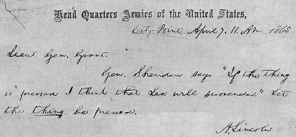

Week 8: Marching Through Georgia
| ||||
| ||||
|
1. Based upon your reading assignments, how would you compare the feelings of the Northern and Southern soldiers toward their country as the armies demobilized after the war? What consequences would you say this would have for Reconstruction? 2. Examine Lincoln's leadership in formulating wartime Reconstruction policy. Was his policy a success or a failure in Louisiana, the most important example of early Reconstruction? Be sure and include in your answer the different groups that Lincoln had to contend with, both in the Republican party (or the National Union party as it was called in 1864) and in the South. 3. Do you think that Reconstruction was shaping up to be essentially conservative, or the "culmination" of the great social revolution of emancipation? | |
|
Lincoln's Deathbed |
A Telegram from Lincoln to Grant
 |
| Telegram from Lincoln to Grant, dated April 7, 1865: "General Sheridan says 'If the thing is pressed I think that Lee will surrender.' Let the thing be pressed." |